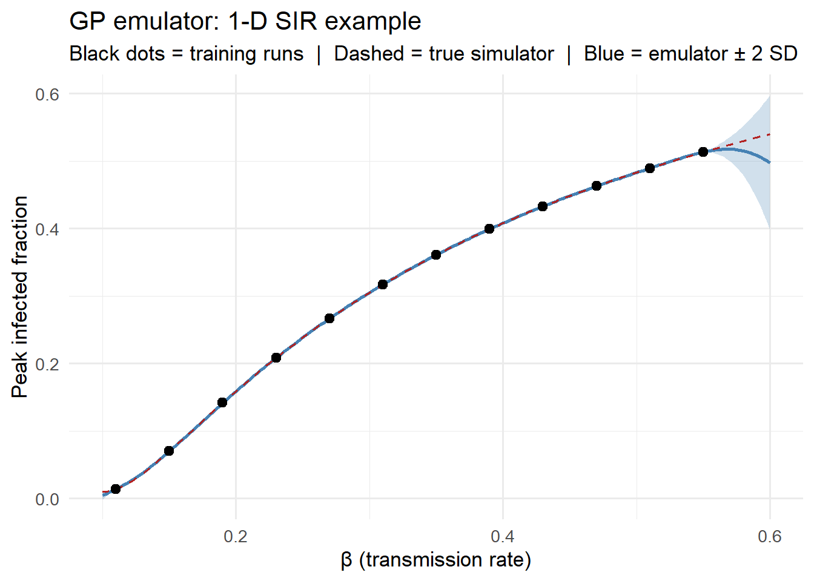
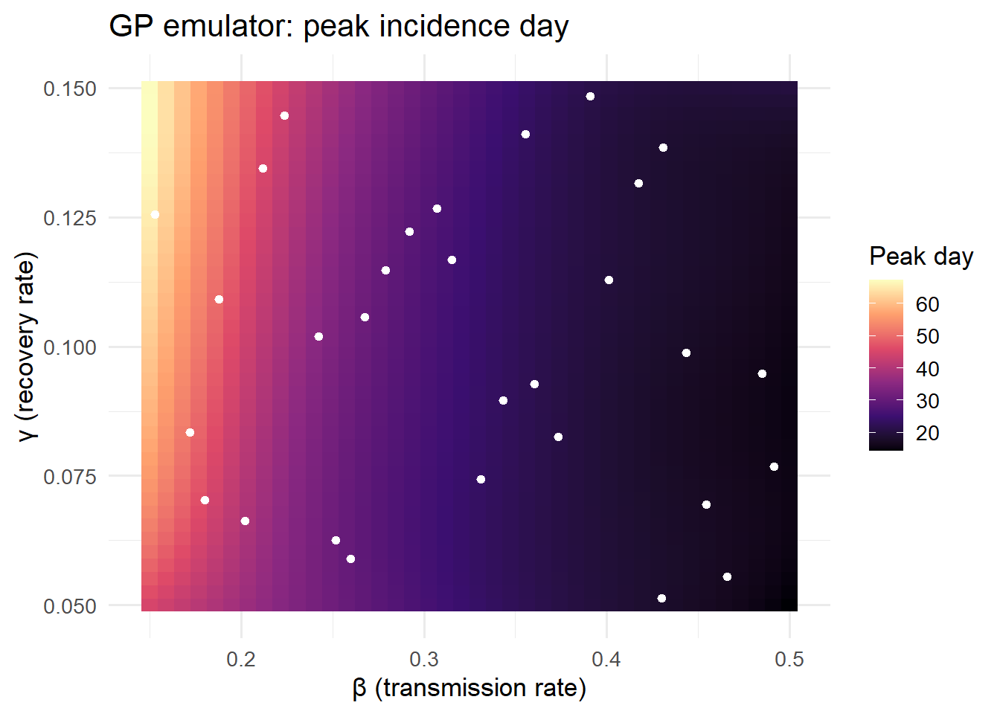
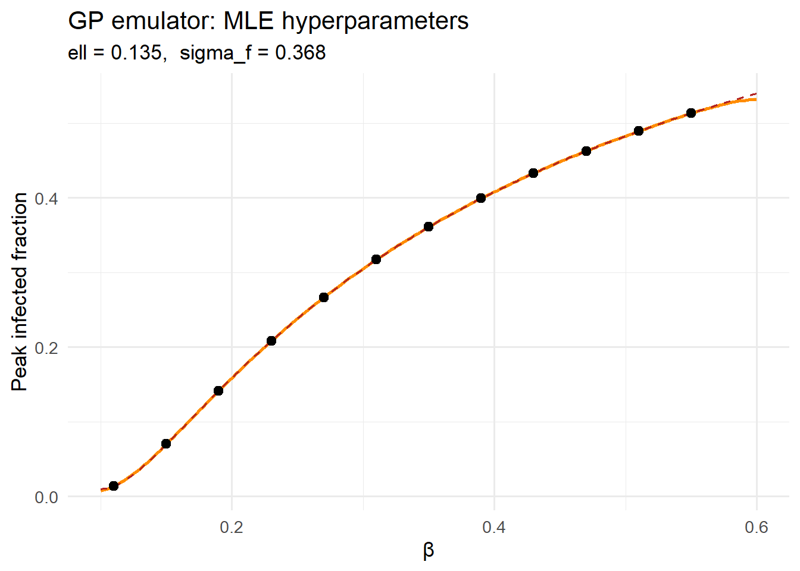
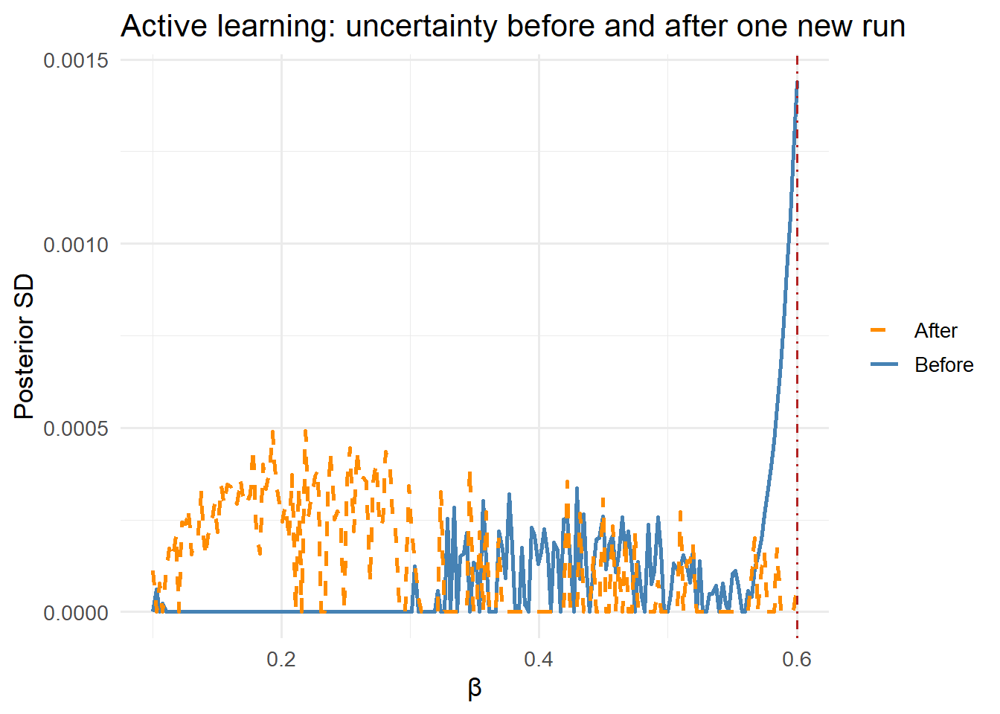

library(ggplot2)
# SIR model: returns peak infected fraction
sir_peak <- function(beta, gamma = 0.1, S0 = 9900, I0 = 100) {
N <- S0 + I0
dt <- 0.1
S <- S0; I <- I0; R <- 0
peak <- I
for (i in seq_len(round(200 / dt))) {
inf <- beta * S * I / N * dt
rec <- gamma * I * dt
S <- S - inf; I <- I + inf - rec; R <- R + rec
if (I > peak) peak <- I
}
peak / N
}Surrogate Models: Replacing Slow Simulations with Fast Emulators
Gaussian process emulation lets you run thousands of ‘virtual experiments’ in seconds. Post 5 in the Building Digital Twin Systems series.
digital twin
Gaussian process
surrogate model
emulator
R
1 When simulation is the bottleneck
The Ensemble Kalman Filter in Post 4 ran 300 particles through an SEIR model 90 times — around 27,000 model evaluations. For a compartmental ODE with five states, each evaluation takes milliseconds. Scale up to an agent-based model with 100,000 individuals, or a partial differential equation over a spatial grid, and a single run takes minutes. Running 27,000 of them is no longer feasible in real time.
A surrogate model (also called an emulator) solves this by learning the input–output map of an expensive simulator from a small number of training runs, then predicting the output for new inputs in microseconds (1). In the context of a digital twin:
- The simulator is the expensive mechanistic model (SEIR with spatial structure, IBM, PDE).
- The surrogate is a statistical model fitted to the simulator’s outputs.
- At runtime, the twin queries the surrogate, not the simulator.
2 Gaussian process regression
The Gaussian process (GP) (2) is the dominant surrogate method in computer experiment design (3) because:
- It provides not just a prediction but a predictive distribution — the twin knows how uncertain each emulated output is.
- Its predictions interpolate the training data exactly (by default) — it is consistent with what the simulator actually produced.
- The uncertainty grows in regions far from training points, giving a natural signal for when to collect more simulator runs.
A GP is a prior over functions. We write:
\[f(\mathbf{x}) \sim \mathcal{GP}(m(\mathbf{x}),\, k(\mathbf{x}, \mathbf{x}'))\]
where \(m\) is the mean function (often zero) and \(k\) is the covariance kernel — a function that measures how similar two inputs are. The workhorse kernel is the squared-exponential (RBF):
\[k(\mathbf{x}, \mathbf{x}') = \sigma_f^2 \exp\!\left(-\frac{|\mathbf{x} - \mathbf{x}'|^2}{2\ell^2}\right)\]
\(\ell\) (length-scale) controls how quickly the function varies; \(\sigma_f^2\) (signal variance) controls its amplitude.
Given \(n\) training points \((\mathbf{X}, \mathbf{y})\), the GP posterior at a new point \(\mathbf{x}^*\) is Gaussian:
\[f(\mathbf{x}^*) \mid \mathbf{X}, \mathbf{y} \;\sim\; \mathcal{N}(\mu^*, {\sigma^*}^2)\] \[\mu^* = \mathbf{k}^{*\top} (K + \sigma_n^2 I)^{-1} \mathbf{y}\] \[{\sigma^*}^2 = k^{**} - \mathbf{k}^{*\top} (K + \sigma_n^2 I)^{-1} \mathbf{k}^*\]
where \(\mathbf{k}^*\) is the vector of covariances between \(\mathbf{x}^*\) and training points, \(K\) is the training covariance matrix, and \(\sigma_n^2\) is nugget (observation noise).
3 Implementation in R
3.1 Setting up: a 1-D toy emulator
We first build intuition with a 1-D example: emulate the peak infected count of an SIR model as a function of \(\beta\).
set.seed(2024)
# Latin hypercube-style training points (evenly spread, small n)
n_train <- 12
beta_train <- seq(0.11, 0.55, length.out = n_train)
y_train <- sapply(beta_train, sir_peak)
# Dense grid for truth
beta_grid <- seq(0.10, 0.60, length.out = 200)
y_true <- sapply(beta_grid, sir_peak)3.2 Building a GP from scratch
We implement the squared-exponential GP in base R to make the mechanics transparent. In production you would use kernlab, DiceKriging, or GPfit.
# Squared-exponential kernel
se_kernel <- function(x1, x2, ell, sigma_f) {
sigma_f^2 * exp(-0.5 * outer(x1, x2, function(a, b) (a - b)^2) / ell^2)
}
# GP fit: return a prediction function
gp_fit <- function(x_train, y_train, ell, sigma_f, sigma_n = 1e-6) {
K <- se_kernel(x_train, x_train, ell, sigma_f)
Kn <- K + sigma_n^2 * diag(length(x_train))
Linv <- solve(Kn) # in production: use Cholesky
alpha <- Linv %*% y_train
predict <- function(x_new) {
Ks <- se_kernel(x_train, x_new, ell, sigma_f) # n_train x n_new
Kss <- se_kernel(x_new, x_new, ell, sigma_f) # n_new x n_new
mu <- t(Ks) %*% alpha
cov <- Kss - t(Ks) %*% Linv %*% Ks
list(mean = as.vector(mu),
sd = sqrt(pmax(0, diag(cov))))
}
predict
}
# Fit with hand-tuned hyperparameters (ell = 0.08, sigma_f = 0.35)
gp_pred <- gp_fit(beta_train, y_train, ell = 0.08, sigma_f = 0.35)
pred <- gp_pred(beta_grid)df_pred <- data.frame(
beta = beta_grid,
mean = pred$mean,
lo = pred$mean - 2 * pred$sd,
hi = pred$mean + 2 * pred$sd,
true = y_true
)
ggplot(df_pred, aes(x = beta)) +
geom_ribbon(aes(ymin = lo, ymax = hi), fill = "steelblue", alpha = 0.25) +
geom_line(aes(y = mean), colour = "steelblue", linewidth = 1,
linetype = "solid") +
geom_line(aes(y = true), colour = "firebrick", linewidth = 0.7,
linetype = "dashed") +
geom_point(data = data.frame(beta = beta_train, y = y_train),
aes(x = beta, y = y), size = 2.5, colour = "black") +
labs(x = "β (transmission rate)", y = "Peak infected fraction",
title = "GP emulator: 1-D SIR example",
subtitle = "Black dots = training runs | Dashed = true simulator | Blue = emulator ± 2 SD") +
theme_minimal(base_size = 13)
The emulator matches the true simulator closely across the entire input range from just 12 training runs. The uncertainty ribbon widens where training points are sparse.
3.3 2-D emulation: (β, γ) → peak day
A more realistic scenario: emulate the day of peak incidence as a function of two input parameters.
# 2-D simulator: returns peak day
sir_peak_day <- function(beta, gamma, S0 = 9900, I0 = 100) {
N <- S0 + I0
dt <- 0.2
S <- S0; I <- I0; R <- 0
peak_I <- I; peak_day <- 0; t <- 0
for (i in seq_len(round(300 / dt))) {
inf <- beta * S * I / N * dt
rec <- gamma * I * dt
S <- S - inf; I <- I + inf - rec; R <- R + rec
t <- t + dt
if (I > peak_I) { peak_I <- I; peak_day <- t }
}
peak_day
}
# Latin hypercube design (manual, 2-D)
set.seed(99)
n2 <- 30
lhs_beta <- (sample(n2) - runif(n2)) / n2 * (0.5 - 0.15) + 0.15
lhs_gamma <- (sample(n2) - runif(n2)) / n2 * (0.15 - 0.05) + 0.05
y2_train <- mapply(sir_peak_day, lhs_beta, lhs_gamma)
# Standardise inputs to [0, 1] for the kernel
x2_train <- cbind((lhs_beta - 0.15) / 0.35,
(lhs_gamma - 0.05) / 0.10)
# 2-D SE kernel (vectorised: uses ||x1-x2||^2 = ||x1||^2 + ||x2||^2 - 2 x1.x2)
se2 <- function(X1, X2, ell, sigma_f) {
X1s <- X1 / ell; X2s <- X2 / ell
d2 <- outer(rowSums(X1s^2), rowSums(X2s^2), "+") - 2 * X1s %*% t(X2s)
sigma_f^2 * exp(-0.5 * d2)
}
K2 <- se2(x2_train, x2_train, ell = 0.4, sigma_f = 40)
K2n <- K2 + 1e-4 * diag(n2)
alpha2 <- solve(K2n) %*% y2_train
# Prediction grid
g <- 40
bg <- seq(0.15, 0.50, length.out = g)
gg <- seq(0.05, 0.15, length.out = g)
grid2 <- expand.grid(beta = bg, gamma = gg)
x2_new <- cbind((grid2$beta - 0.15) / 0.35,
(grid2$gamma - 0.05) / 0.10)
Ks2 <- se2(x2_train, x2_new, ell = 0.4, sigma_f = 40)
grid2$pred <- as.vector(t(Ks2) %*% alpha2)ggplot(grid2, aes(x = beta, y = gamma, fill = pred)) +
geom_tile() +
scale_fill_viridis_c(option = "magma", name = "Peak day") +
geom_point(data = data.frame(beta = lhs_beta, gamma = lhs_gamma),
aes(x = beta, y = gamma), colour = "white",
size = 1.5, inherit.aes = FALSE) +
labs(x = "β (transmission rate)", y = "γ (recovery rate)",
title = "GP emulator: peak incidence day") +
theme_minimal(base_size = 13)
3.4 Hyperparameter selection via marginal likelihood
In practice, the length-scale \(\ell\) and signal variance \(\sigma_f\) are estimated by maximising the log marginal likelihood of the training data — the GP’s built-in objective for selecting hyperparameters (2):
\[\log p(\mathbf{y} \mid \mathbf{X}, \theta) = -\frac{1}{2}\mathbf{y}^\top K_n^{-1}\mathbf{y} - \frac{1}{2}\log|K_n| - \frac{n}{2}\log 2\pi\]
log_ml <- function(log_ell, log_sf, x, y, sigma_n = 1e-4) {
ell <- exp(log_ell); sf <- exp(log_sf)
K <- se_kernel(x, x, ell, sf) + sigma_n^2 * diag(length(x))
# Cholesky for numerical stability
L <- tryCatch(chol(K), error = function(e) NULL)
if (is.null(L)) return(-Inf)
alpha <- backsolve(L, forwardsolve(t(L), y))
-0.5 * sum(y * alpha) - sum(log(diag(L))) - 0.5 * length(y) * log(2 * pi)
}
# Grid search over log-hyperparameters
ell_seq <- seq(-4, 0, length.out = 25)
sf_seq <- seq(-2, 1, length.out = 25)
lml_mat <- outer(ell_seq, sf_seq,
Vectorize(function(le, ls) log_ml(le, ls,
beta_train, y_train)))
best_idx <- which(lml_mat == max(lml_mat, na.rm = TRUE), arr.ind = TRUE)
ell_opt <- exp(ell_seq[best_idx[1]])
sf_opt <- exp(sf_seq[best_idx[2]])
cat(sprintf("Optimal ell = %.4f, sigma_f = %.4f\n", ell_opt, sf_opt))Optimal ell = 0.1353, sigma_f = 0.3679# Refit with optimal hyperparameters
gp_opt <- gp_fit(beta_train, y_train, ell = ell_opt, sigma_f = sf_opt)
pred_opt <- gp_opt(beta_grid)df_opt <- data.frame(
beta = beta_grid,
mean = pred_opt$mean,
lo = pred_opt$mean - 2 * pred_opt$sd,
hi = pred_opt$mean + 2 * pred_opt$sd,
true = y_true
)
ggplot(df_opt, aes(x = beta)) +
geom_ribbon(aes(ymin = lo, ymax = hi), fill = "darkorange", alpha = 0.25) +
geom_line(aes(y = mean), colour = "darkorange", linewidth = 1) +
geom_line(aes(y = true), colour = "firebrick", linewidth = 0.7,
linetype = "dashed") +
geom_point(data = data.frame(beta = beta_train, y = y_train),
aes(x = beta, y = y), size = 2.5, colour = "black") +
labs(x = "β", y = "Peak infected fraction",
title = "GP emulator: MLE hyperparameters",
subtitle = sprintf("ell = %.3f, sigma_f = %.3f", ell_opt, sf_opt)) +
theme_minimal(base_size = 13)
4 Active learning: where to run the next simulation
The GP posterior variance tells you exactly where the emulator is most uncertain. Active learning (also called sequential design) uses this to choose the next simulator run:
\[\mathbf{x}^*_{\text{next}} = \arg\max_{\mathbf{x}} \,\sigma^*(\mathbf{x})^2\]
# Current uncertainty
sigma_init <- pred_opt$sd
# Pick the most uncertain point
next_idx <- which.max(sigma_init)
beta_next <- beta_grid[next_idx]
y_next <- sir_peak(beta_next)
cat(sprintf("Next training point: beta = %.3f, peak = %.4f\n",
beta_next, y_next))Next training point: beta = 0.600, peak = 0.5399# Refit with the new point
x_aug <- c(beta_train, beta_next)
y_aug <- c(y_train, y_next)
gp_aug <- gp_fit(x_aug, y_aug, ell = ell_opt, sigma_f = sf_opt)
pred_aug <- gp_aug(beta_grid)
df_aug <- data.frame(
beta = beta_grid,
before = sigma_init,
after = pred_aug$sd
)
ggplot(df_aug, aes(x = beta)) +
geom_line(aes(y = before, colour = "Before"), linewidth = 1) +
geom_line(aes(y = after, colour = "After"), linewidth = 1,
linetype = "dashed") +
geom_vline(xintercept = beta_next, linetype = "dotdash",
colour = "firebrick") +
scale_colour_manual(values = c(Before = "steelblue", After = "darkorange")) +
labs(x = "β", y = "Posterior SD",
colour = NULL,
title = "Active learning: uncertainty before and after one new run") +
theme_minimal(base_size = 13)
5 Where surrogates fit in a digital twin
A surrogate reduces a slow simulator to a fast lookup. In a deployed digital twin pipeline:
Offline (once, or periodically):
Run simulator at N_design input configurations
│
▼
Fit GP emulator
│
▼
Store emulator (kernel matrix + hyperparameters)
Online (real-time):
New surveillance data
│
▼
EnKF queries emulator instead of simulator ← 1000x speedup
│
▼
Update dashboardFor epidemic models with complex spatial or age structure, emulation is often the only way to achieve the sub-second update times a real-time dashboard requires.
6 Key design choices
Training design. Latin hypercube sampling (LHS) spreads training points efficiently across input space — much better than a regular grid in high dimensions. For \(p\) inputs and \(n\) training runs, a practical budget is \(n \approx 10p\) for smooth functions.
Kernel choice. The squared-exponential kernel assumes infinitely differentiable outputs — appropriate for smooth ODE models. For models with discontinuities (agent-based, stochastic), the Matérn-5/2 kernel is more robust.
Dimension reduction. GP computational cost scales as \(O(n^3)\) in the number of training points. Above \(n \approx 2000\), use sparse GPs (inducing point methods) or principal component emulation for high-dimensional outputs.
Validation. Always hold out a test set of simulator runs and check that the true outputs fall within the GP’s predictive intervals. A 95% interval that contains fewer than 85% of test points signals a mis-specified kernel or inadequate training design.
7 References
1.
Sacks J, Welch WJ, Mitchell TJ, Wynn HP. Design and analysis of computer experiments. Statistical Science. 1989;4(4):409–23. doi:10.1214/ss/1177012413
2.
Rasmussen CE, Williams CKI. Gaussian processes for machine learning [Internet]. Cambridge, MA: MIT Press; 2006. Available from: http://www.gaussianprocess.org/gpml/
3.
Kennedy MC, O’Hagan A. Bayesian calibration of computer models. Journal of the Royal Statistical Society: Series B (Statistical Methodology). 2001;63(3):425–64. doi:10.1111/1467-9868.00294